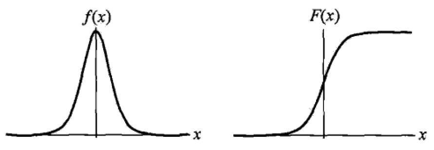

Machine Learning - Logit (MaxEntropy)
Logistic Regression and Maximum Entropy
Logistic Regression Model
Logistic Distribution
Probability density function and Cumulative distribution function are

Sigmoid Function
Binomial Logistic Regression Model
Binomial logistic regression model is a classification model that is represented by conditional probability $P(Y \mid X)$ and formulated by paramterized logistic distribution.
What is the Sigmoid Function?
In order to map predicted values to probabilities, we use the Sigmoid function. The function maps any real value into another value between 0 and 1. In machine learning, we use sigmoid to map predictions to probabilities.
Model
For a given binary logistic regression model with parameters $\wb$ and $b$, an input $\xb$ can be classified by comparing the above two probabilities.
How to determine $\wb$ and $b$?
Likelihood Function
Log-likelihood Function
Maximize $L(\wb, b)$ with respect to parameters $\wb$ and $b$.
Multi-nominal Logistic Regression Model
Maximum Entropy Model
Entropy: The entropy of a discrete random variable with probability mass distribution $P(X)$ is
- Measure of uncertainty of $X$
- $H(X) \geq 0$
- Maximal for uniform distribution. For a finite support, by Jensen’s inequality:
MaxEnt Principle: find distribution that is closest to a prior distribution (typically uniform distribution) while verifying